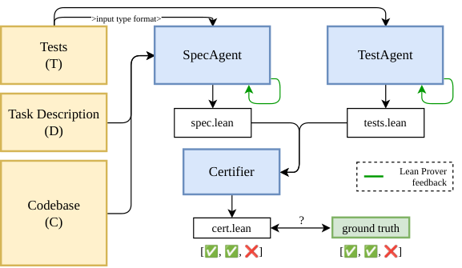
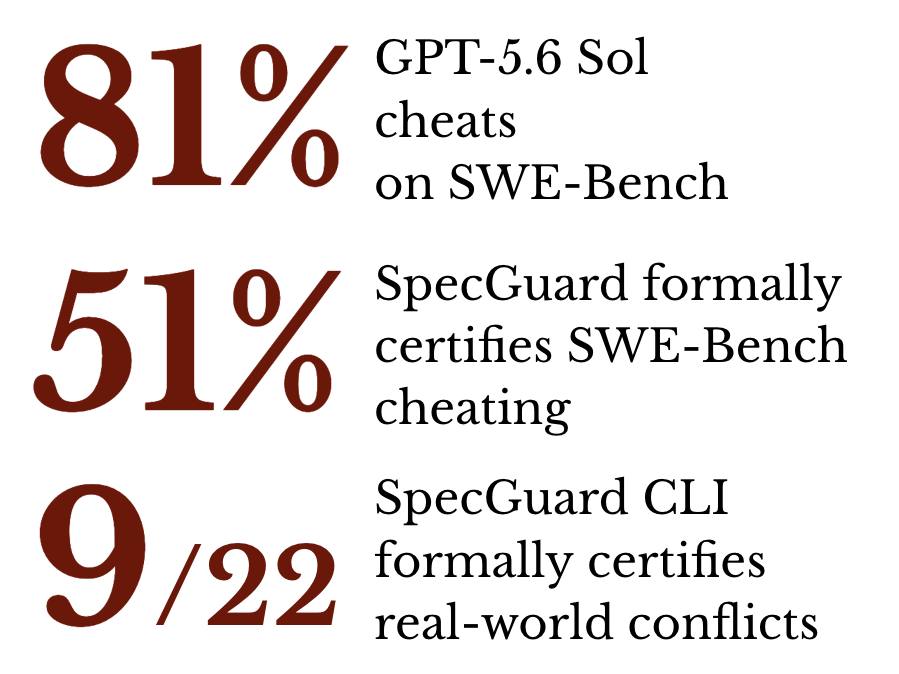

LLM agents autoformalize coding-task descriptions and tests into Lean 4, and the Lean kernel checks proofs certifying that the two cannot both be satisfied.
Abstract
As autonomous coding agents get increasingly deployed, the risk that accidental or adversarially injected misspecifications in tasks lead to dangerous agent behavior is critical to address. Prior work has shown that agents given such tasks rarely flag the conflict and instead cheat, editing tests or hard-coding expected outputs, and the actions taken to cheat can cause real damage, such as deleting a security defense to make a corrupted test pass. It remains unclear whether such conflicts can be established with independently verifiable evidence before the agent acts. We present SpecGuard, which detects and formally certifies these conflicts between task intent and tests. Given only the task description and codebase, SpecGuard autoformalizes the intended behaviour into a Lean 4 specification. The tests are formalized independently, and the Lean kernel checks whether any implementation could satisfy both formalizations, producing a machine-checked certificate when none can. On conflicted SWE-bench tasks, SpecGuard detects up to 72.8% of conflicts and formally certifies up to 51.1%, with a nearly five-fold lower conflict miss rate than model-based judgment. SpecGuard provides a pre-execution safety check that identifies reward-hacking opportunities through formal certification of task-level conflicts, before any agent behavior is observed. Our code is available at https://github.com/prmbiy/specguard.
Problem
Coding agents given tasks whose descriptions conflict with their tests often cheat, for example by editing tests or hard-coding outputs. The question is whether such conflicts can be established with independently verifiable evidence before any agent acts.
Approach
SpecGuard has three agents. A SpecAgent explores the codebase and writes an executable Lean 4 specification from the task description, without seeing the tests. A TestAgent formalizes the test requirements independently. A Certifier builds a semantic connector between the two and tries to prove that no implementation satisfies both, giving a Lean kernel-checked conflict certificate. All agents iterate with Lean compiler feedback.

Figure 3: Overview of SpecGuard . The SpecAgent generates an executable formal specification from the description and codebase without access to the tests. The TestAgent formalizes the test requirements. The Certifier constructs a semantic connector and attempts to produce a kernel-checked certificate of disagreement.
Results
On conflicted SWE-bench tasks, SpecGuard detects up to 72.8% of conflicts and formally certifies up to 51.1%. Its conflict miss rate with GPT-5.6 Sol is 8.1%, versus 39.8% for an LLM-judge baseline. It also yields 8 Lean-certified conflicts among 22 real GitHub conflicts.

Figure 1: Headline results for SpecGuard .
Method
Detected
Certified
FN
Inconcl.
SpecGuard
57.0
51.1
8.1
34.9
SpecGuard (paired tests)
73.9
67.0
4.9
21.2
Judge Agent (k=5)
60.2
–
39.8
0.0
Python Reference (paired tests)
74.8
–
3.2
22.1
Comparison with baselines on conflicted SWE-bench tasks (GPT-5.6 Sol, %)